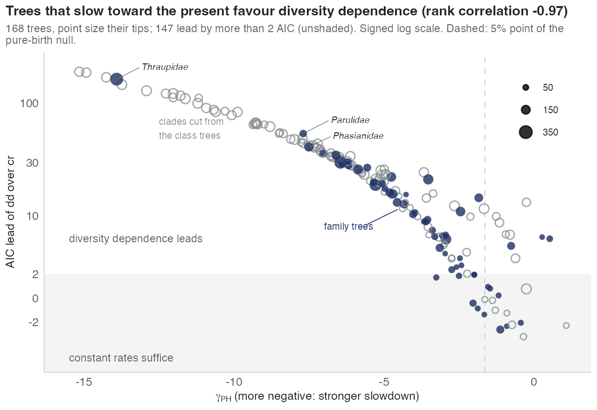
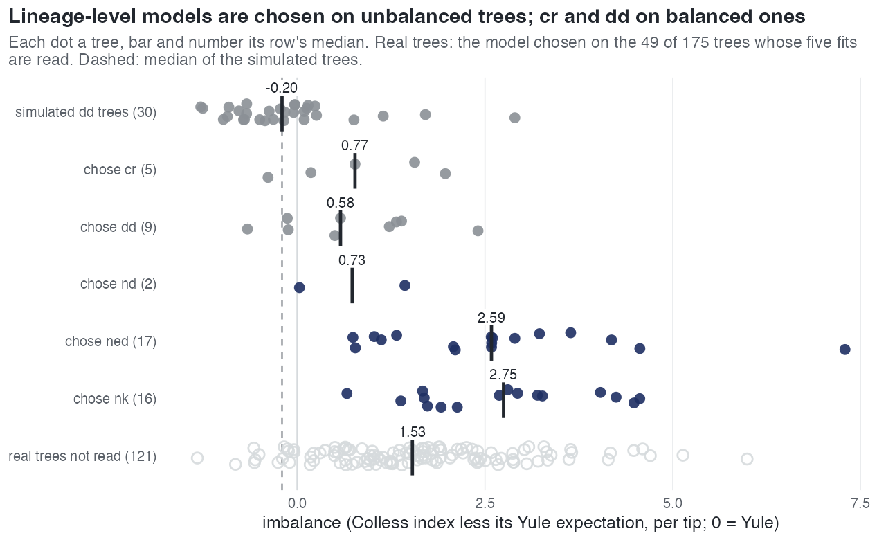
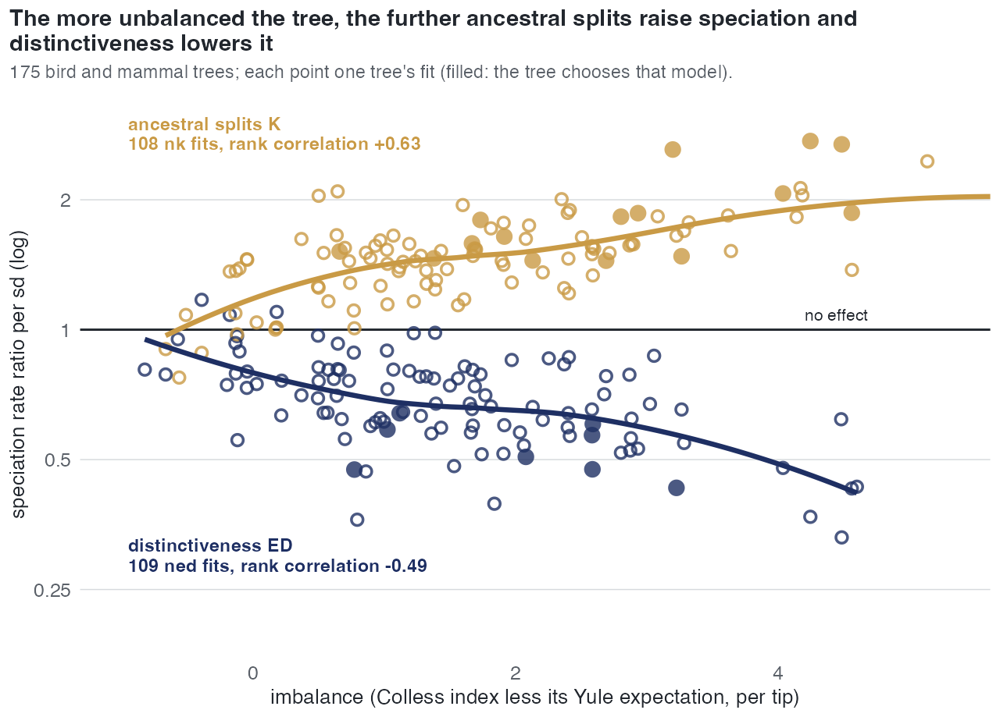
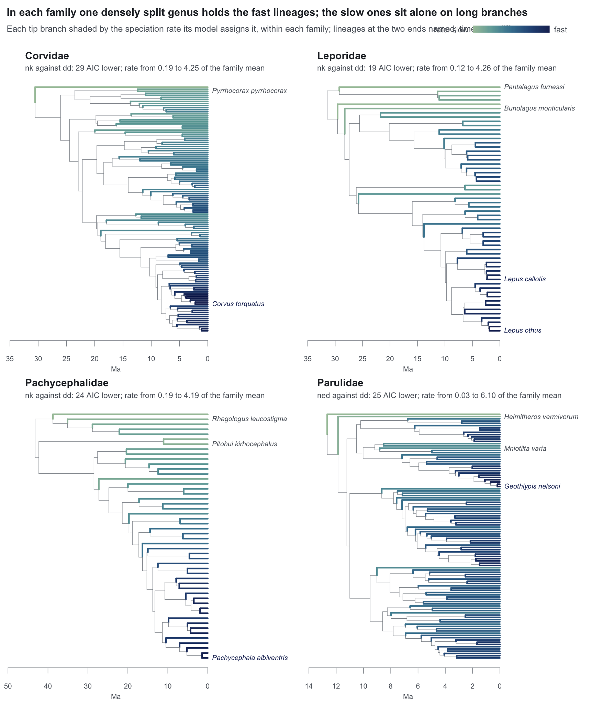
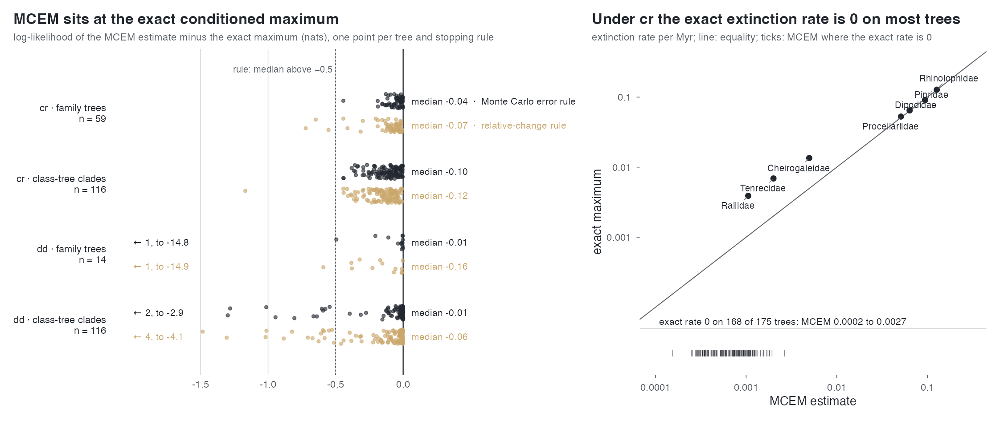
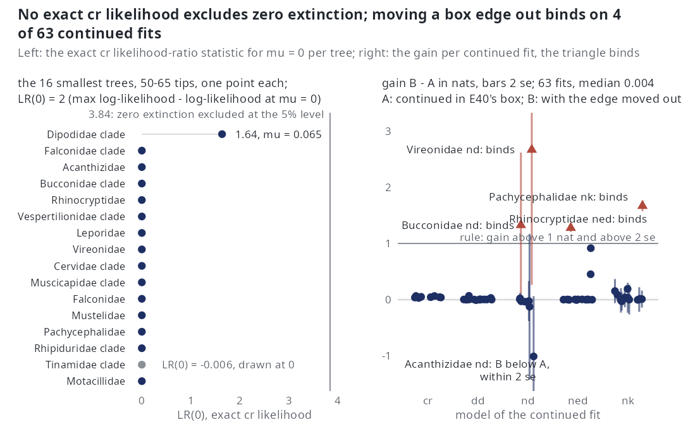

Phylogeny analyses - what the workflow returns on 175 bird and mammal trees
The trees are the bird and mammal family trees of Condamine et al. (2019) with 50 to 400 tips, a tip-depth spread of at most 15% of the crown age and a sampling fraction against the class tree between 0.5 and 1.10 (59 trees, \(\rho\) taken as \(\min(\rho, 1)\)), and the bird and mammal class trees (McTavish et al. 2025, 10,824 tips; Upham et al. 2019, 5,912 tips) cut from the root into disjoint clades of 50 to 200 tips (116 clades, \(\rho = 1\)); 30 clades stand for a family that also has a Condamine tree, and make the pairs. Every tree is fitted by the five models of the ladder under the protocol of the validation series (V11): conditioned on survival, emphasis b21083f, 200 draws, projected, a fit on the 1000-iteration cap read as the estimate, a 22-hour clock. A fit is read when it ended by its rule or on the cap with a final effective sample of at least 10; a statement about one model rests on that model's read fits, and a model choice on the trees whose five fits are read. The nd rung is being refitted on the surrogate proposal (V11, V11b); the numbers below are V11's registered reading.
Diversity dependence

dd leads cr by more than 2 AIC on 147 of the 168 trees where both fits are read (43 of 56 family trees), and \(\beta_N\) is negative on all 168. The lead tracks \(\gamma_{\mathrm{PH}}\) (rank correlation −0.97; −0.89 over the family trees); the largest family leads are Thraupidae (161 AIC), Parulidae (54), Phasianidae (41), Cercopithecidae (36) and Turdidae (35). (results/V11/dd-vs-cr.csv)
Model choice

49 trees have all five fits read (17 family trees, 32 clades); the nd fit alone leaves 101 unread (effective sample below 10 on 93). On the 49 the parsimony rule chooses ned on 17, nk on 16, nd on 2, dd on 9 and cr on 5, and the trees that choose a lineage-level model have a median normalised Colless index of 2.59 against 0.67 for those that stop at cr or dd; 30 simulated dd trees sit at −0.20. On the 49, the unconditioned ladder of E40 made the same choice on 46. Leaving nd out (a reading the design did not register), 96 trees have four fits read: nk 38, ned 33, dd 19, cr 6. (results/V11/trees.csv)
Coefficients

The ancestral-split factor per standard deviation of \(K\) is above 1 on 104 of 108 read nk fits (median 1.50) and on all 16 trees that choose nk (median 1.72). The distinctiveness factor is below 1 on 109 of the 112 read ned fits off the box edge (median 0.67) and on all 17 that choose ned (median 0.47). The age-imbalance factor has a median of 0.77 over 72 read nd fits. The \(K\) factor rises with imbalance (rank correlation 0.63 over 108 fits) and the \(\mathrm{ED}\) factor falls with it (−0.49 over 109). Where both are read, nk has the lower AIC on 59 of 98 trees. (results/V11/coefficients.csv)

In the families that choose nk one genus holds most of the fast lineages: Corvus (factor 2.1), Lepus (2.7), Pachycephala (2.7); in the New World warblers (ned, 0.40) Geothlypis and part of Setophaga.
The pairs
Both members are read on 2 of the 30 pairs, so the pre-set rule (same choice on at least 70%, same sign on at least 80%) cannot be applied. Where a coefficient is read in both members, its factor lies on the same side of 1 on all 18. (results/V11/pairs.csv)
MCEM against the exact estimate

On the 175 trees, conditioned on survival under rel_change and under mc_error, the MCEM estimate of cr and dd sits at the exact conditioned maximum: median deficit −0.01 to −0.16 nats, 90th percentile of its size 0.13 to 0.65, in all eight groups of model, rule and tree set; Picidae under dd stops 14.8 nats below at a second mode. The exact cr maximum has zero extinction on 168 of the 175 trees (V4).
Extinction on real trees

nd (2.67, se 1.20), Pachycephalidae nk (1.67, se 0.05), Bucconidae nd (1.33, se 0.65), Rhinocryptidae ned (1.28, se 0.04).On the 16 smallest trees (50-65 tips) no exact constant-rate likelihood excludes zero extinction: LR(0) is below \(10^{-6}\) on 14, 1.64 on Dipodidae (\(\hat\mu = 0.065\), \(\hat\lambda = 0.130\)) and -0.006 on Tinamidae (an optimiser shortfall, drawn at 0). All 135 continuation jobs of the pilot are written (72 arm A, 63 arm B). Moving the edge out gains a median 0.004 nats (quartiles 0.001 and 0.039; range -1.01 to 2.67); the edge binds on 4 of 63 (6%), three of them pairs in which an arm did not converge, against the 20% of E41's rule 2, so the box stays and a parameter on an edge is read as not bounded by the tree in that direction. Arm B ends on its moved edge on 37 of 63: every extinction slope on an edge (\(\gamma_N\) 47, \(\gamma_{ED}\) 16, \(\gamma_K\) 11) runs to the new edge, three times as far from zero, for no gain. The -1.01 is Acanthizidae nd, whose arm B ended below arm A, within two standard errors of zero (standard error 0.54). Arm A meets the stopping rule within 1000 iterations on 34 of 72 jobs (dd 16 of 16, ned 12 of 16, cr 6 of 8, nd 0 of 16, nk 0 of 16), and re-ranking each tree with the continued fits changes the parsimonious choice on 0 of 16 (rule 1: 10%): E40's choices on these trees stand. E41 is closed at the pilot; the 154 trees beyond it are not run.
Where the data are
results/V11/ of the experiments repository: fits.csv (every fit), trees.csv (read state and choice per tree), coefficients.csv (factor per read lineage-level fit), dd-vs-cr.csv (lead and \(\gamma_{\mathrm{PH}}\)), pairs.csv, built by sim/V11-analysis.R and sim/V11-report.R; figures by sim/paper-figs/fig-p-real.R and fig-p-real-trees.R. The earlier unconditioned analysis is E40.
Related
V11 · V4 (MCEM against the exact estimate) · E41 (box edges) · E42 · Estimability